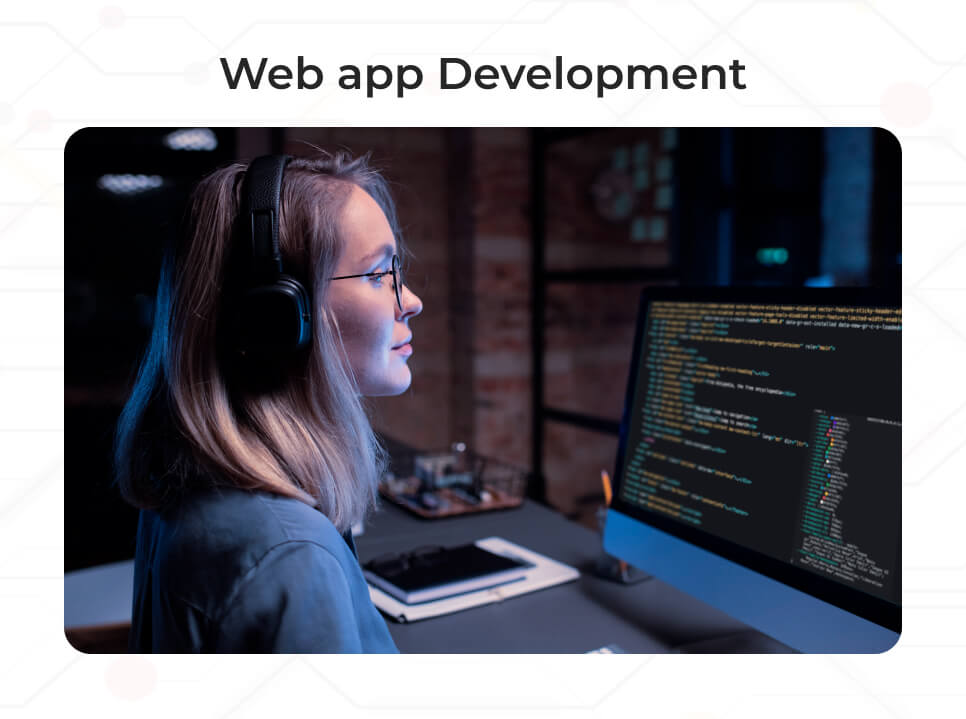
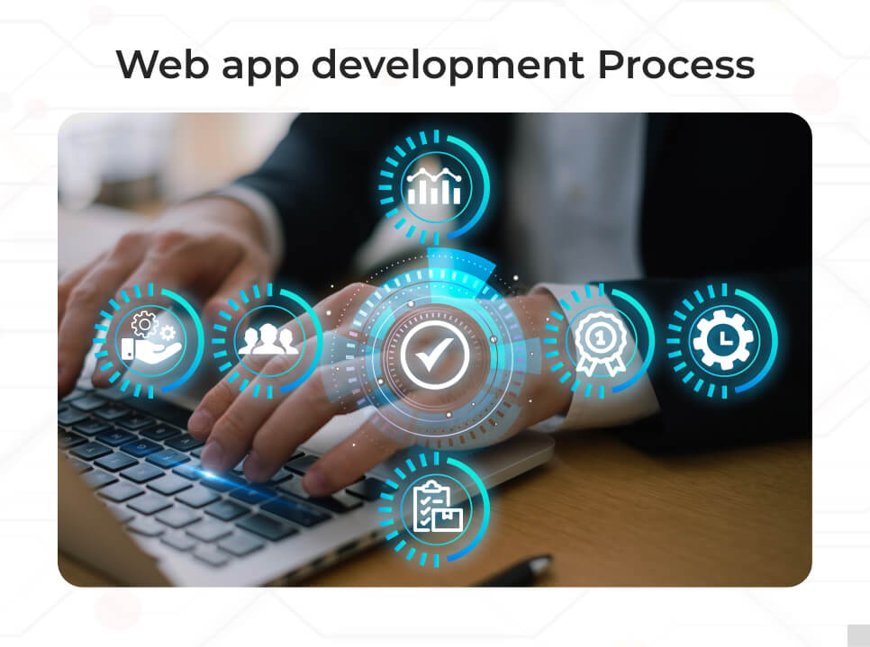

If you’re here then you’re probably a founder with web app ideas and you want to know if web app development is the right way to go. Don’t worry, if you’ve stumbled upon this blog then you are on the right track. Puns aside, in this blog we are going to cover everything you need to know before you embark on your journey of building a web app. I know that things can get a bit confusing in the midst of it all so we are going to explore everything from what a web application is to what you can do with a web app as a business.

Many businesses go the web app development route because it's an easy way to enter into the market with your idea. If you think about it, most people today use a smartphone and it is true that most people depend on mobile applications to get their work done, entertain themselves or just express themselves through social media. However, launching a mobile app is tricky business because logically you’re trying to occupy real estate on someone’s phone. And people are very cautious about what they install on their phones these days. But guess what? A web app can solve that. We’ll talk about this and more about web app development in this blog so make sure you read till the end.
No matter what you’re trying to accomplish building a web app is a business decision. It should be taken strategically because some apps are just better on mobile phones. The social media of today for example mostly live on people’s phones and gone are the days when you sit on your computer to check your facebook notifications (unless it’s your business page).
With that said, mobile applications have not replaced web app development because for some use cases or businesses a web app may be the right choice. Let’s say that you have a business and you need an app for your employees to check their leaves, their check in and check out times and so on. Most people do this on their office devices anyway so creating a dedicated mobile app for that may be overkill.
Here you’re much better off building a web app that’s easy to access for your employees.
On the other hand, it’s much simpler to find developers for web app development as compared to mobile app development. Most of the technologies we use today for the web have been around for a long time and experts are easy to come by. Even if you don’t want to go through the trouble of hiring a team to build your app (which most people don’t) you can easily find agencies that can do the work for you.
However, it’s not all fun and games though. For example, if you’re building an app for enterprise use cases like banking the process of web app development itself is crucial. Because you don’t want your users to open their accounts one day and find that someone stole their hard-earned money. Which realistically can happen if your app is not secure.
In other words, building a web app can be an easy way for you to enter the market with your idea or product but you have to build a high quality web app if you want to be successful.
Key Takeaways
- Web apps are a quicker way to enter the market.
- You can easily find experts for web app development.
- The technologies are very mature.
- Some use cases can favor web apps to mobile apps.
Now that we’ve had a look over what a web app means for a business let’s look at what a web app actually is.
A web app is a software application that works over the internet and a user who wants to use your app needs internet access. Technically, a website is also a web application in the sense that it allows you to do certain actions through various buttons and features. However, web app development is simply about creating an application that a user can use through their web browser without needing to download any application on their device.
While most mobile applications and desktop applications live on your physical device’s storage a web application lives on the cloud and you can access it from anywhere as long as you have access to the internet. We’ll talk about what it takes to build a web application and the technologies you need to build and use it in just a few minutes. But in a nutshell, web app development is just about creating software that you can use through a web browser.
Key Takeaways
- A web app is software that you can use through your web browser.
- A user does not need to install or download any software on their device to use a web app.
- A web app is similar to a website in that it also lives on a server/cloud to be accessible remotely over the internet.
If you’ve read this far then you probably now have a few hints about what the benefits of web app development are but lets cover all the bases. Specifically, let’s go over the benefits of building a software from scratch or what we call custom software.
Custom software development is about creating a piece of software from the ground-up or using an existing codebase and customizing it to suit your needs. Now, why would you build a web application from scratch and what are the alternatives? You build a web application from scratch because you have web app ideas to solve a problem and you need to code custom features to tackle those problems through web app development.
Now, let’s explore the specific reason why you may choose to build a web app from scratch and the advantages of a web application.
Solving Specific Problems
Building digital products is all about solving problems and solving them efficiently. When you have specific problems you want to solve you may not be able to address those problems through existing solutions. I say that because one alternative to building a custom web app is to use a white label solution. White label solutions that prebuilt software solutions that you can use to launch apps quickly. For example, white labeling is extensively used in e-commerce web app development where you already know the basic functions of the app and all you really have to do is customize and brand it to align with your business.
However, when you’re trying to solve specific problems like in situations where you are tackling a problem that no one has effectively solved before you may have to curate each feature to suit your needs. Here, you may choose to build the app from scratch because to solve those problems you have to figure out unique solutions. In these kinds of scenarios, custom web app development is the right choice for you.
Flexibility & Scope
Adding to the above conversation, you may also need some flexibility when you’re building your web app. Sometimes your scope of work may be very elaborate like for example you’re building an app using AI and you constantly need to make modifications to get the relevant results. In this case, building an app from scratch would allow you to make changes to features and functionalities in between the development process. Here, you can decide exactly how your app should function through custom web app development and make sure that the scope of work correctly resonates with the web app that you have built.
Additionally, you can use agile project management methodologies to make the development process more flexible and iterative. The combination of agile practices and custom development here allows you to create web applications that are unique and customizable to suit your business needs.
Scalability
Scalability is kind of a magic word when it comes to web applications because the computing happens on a cloud server. Web apps work just like any other software with the difference in web app development being that your software resides on the cloud. Just as you have an operating system and supporting programs for smartphones and desktops the cloud server will also have a processor, storage and other supporting programs already installed. The web app itself works through these supporting solutions just like any other app.
However, web apps allow you to make your solutions more scalable in that you can increase the computing power and storage of your cloud servers as your business grows. Modern methods like load balancing allows web apps to automatically scale as the traffic coming to your web app increases and is an integral part of web app development. Since all of this happens behind the scenes your users will have a seamless experience when using your product.
Data Retention & Security
Data is like gold in the digital world and your data is perhaps the most valuable asset that you have. However, data security is an increasing concern and data retention is crucial when you have a business. With cloud solutions and web apps you can store your data remotely on cloud servers and retain them whenever you want, from wherever you want. Building an application through custom web app development means that you can allow your users to use your application from any device without worrying about their data being leaked.
Now, data security for cloud solutions is a different conversation altogether but the plus side is that if your device is inaccessible or even stolen all your data is still on a cloud server and no one can access them as long as you have all the fail safes in place.
Key Takeaways
- Solving Specific Problems: You can create unique solutions that tackle specific problems.
- Flexibility & Scope: You can ensure that your web app development process is iterative and that your product resonates with the broader scope.
- Scalability: Your applications can scale as the userage and your business grows.
- Data Retention & Security: You can enable users to access and store data remotely on the cloud and ensure that the data is always available and secure.
Now, let’s look at some of the technologies that you will have to use when building web applications. We’ll keep it simple but still cover the specific components that empower web app development.
In a nutshell, these are the 6 components to a web application:
- Programming Languages: The building blocks of web apps, the language you use to code.
- Web development frameworks: The standard that you follow to implement different functions using programming languages.
- Frontend: The interface that users interact with.
- Backend: Enables the functionality of your app.
- Database: What you use to store and retrieve data.
- APIs: To communicate between the frontend, backend and other applications.
- Cloud & Hosting: This is where you store the application itself and where it runs.
- Security: To ensure that your user data and application is secure from unauthorized access.
Now, we can get into these web app development technologies in a bit more detail.
Programming Languages
A programming language is what you use to code your web application. It's basically alphanumeric characters that you can use to tell the compiler that you want your web application to do. The code compiler can then convert this into machine readable language and your web apps will function as it should.
Examples are JavaScript, TypeScript, Python, Rust, etc.
Web development frameworks
Frameworks are like standards or rules that you follow when coding to achieve specific results. For instance, if you want to cook a specific dish for your meal you will have a recipe with instructions on how you should cook it and what you should add. You can say that web app development frameworks are similar to this in the sense that you have to follow a Syntax to code.
Examples are Angular, Django, Express.js, etc.
Frontend
The frontend is exactly what it sounds like it is the interface that your users interact with to use your application. In other words, everything you see visually when you open a web application is the frontend. Adding to our conversation above, you have to use web development frameworks like Angular to program your frontend using a programming language.
Backend
The backend of your application is also what it sounds like in web app development because it is what gives your application its functionalities. For example, let’s say that you’re building a web app to find the best hotels near an area. The functionality of searching various hotels and retrieving their details for us to view is the function of the backend.
Database
Your database is what you use to store and retrieve data. For example, if you have an application that allows teachers to update and view information about students in a class this data is stored on the database and fetched whenever needed. Databases are an integral part of web app development and examples would be the likes of MongoDB, MySQL, PostgresQL, etc.
API or Application Programming Interface
APIs are like the messengers in between that allow you to communicate with different parts of your application. Let’s say that you create the frontend and backend of your web application and now you need the frontend and backend to understand each other so that your web application functions as it should. This is where smaller programs named APIs are written in code to facilitate this activity. Additionally, you can also create APIs in web app development to send and receive data between your web application and third party applications or services.
Cloud & Hosting
While databases store specific data that you want to access whenever needed, your cloud storage or web hosting is where you store your entire application. The cloud storage or web hosting is essentially a server or a cluster of servers that can store and process data you provide. Just like a physical device a server will also have software that understands and can run your web applications through the internet in web app development.
Security
Simply put, security is any technology or practices that you use to secure your web application from unintended users or use cases. For example, if you do not have your web app’s security sorted, hackers can penetrate into your servers, your web app page or any related services to either make your web app inaccessible or to invoke malicious activities. This could be deleting files, accessing users’ accounts or just crashing your web app so that no one can use it.
Now, we are going to see how web app development can help small businesses run their operations better. By now you may have already figured out how web applications could potentially help businesses but we’re going to cover all the bases.
A major way web applications help smaller businesses is by giving them accessibility. As a small business you may have many tasks that you can complete using software but its usually just a hassle to install applications and run them on your device. Small businesses may not be able to afford devices with high computing power or may not want the hassle of installing software. web app development solves this by giving your an application that can still do everything you need it to do but you access this application through your web browser. The great thing about web apps is that you can even open web apps using your phone’s web browser and they will function as they should.
Additionally, many small businesses even create web applications as part of their business model because they can automate certain aspects of their business and their users can simply use their web apps to get the job done. For example, through web app development you can create ticketing apps for events and books. Unlike traditional ticket booking you don’t have to directly interact with your customers to book them tickets. Instead your users can easily access your ticketing software through their web app and book the tickets themselves.
When it comes to developing web applications you have 7 steps that you need to follow.
- Requirements gathering.
- Scope of work.
- Choosing the technologies.
- Wireframing & Prototyping.
- Product Development.
- Quality Assurance & Testing
- Deployment to production.
Requirements gathering
This is the initial stage of web app development where you figure out the goals and results of your web application. This usually involves deeply understanding the problem and listing out the outcomes you want and also the path that you will take to solve this problem.

Scope of work
Once you know what your requirements are then you can decide on how you want to approach the development process. This stage involves explaining exactly what you need to build and at what stage you will build each component.
Choosing the technologies.
Now that you know the scope of work you can decide on what technologies to use for web app development. There are a few considerations for choosing your technologies like what technology can give you the best results, if the technology you use is scalable when your app grows and if it is accessible to you at your current stage of the project.
Wireframing & Prototyping
At this stage your web application will take shape and you will have an idea about how it will look and feel once you build the application. User experience design is a crucial part of building an app but it is also something that many founders overlook in web app development.
Product Development
This is the stage where in a manner of speaking the “rubber meets the road.” You’ll be coding everything from the frontend and backend to the APIs of your web application. However, if you have all your steps properly completed till this point it's much easier for you to build quality web applications.
Quality Assurance & Testing
Once your application is built you will need to put it through various manual and automated testing procedures to make sure that your applications perform as they should. Testing is a huge part of web app development and typically this is an ongoing process especially if you’re building an app using agile methodologies.
Deployment to production
Now that you have tested your web application and made sure that you have a quality product with no bugs or inefficiencies you can deploy it on a server. While websites are typically deployed on a shared hosting service web apps need a cloud provider to function properly. You could use lower capacity solutions but when you want your web apps to be scalable a good cloud provider like AWS or Microsoft Azure ensures that your apps function as they should with minimal downtimes.
Web app development will always be here to stay because of how easy it is for businesses to access. Web development frameworks and cloud infrastructure have come a long way since the inception of the internet and many businesses depend on web applications today for their everyday operations. The cloud is regarded as a solution of the future where applications can be accessed remotely and upgrades rolled out without any friction for the users.
In 2024, we can see that cloud solutions are everywhere and everything from your banking portal to online shopping is powered by web app development. The emergence of advanced technologies like AI and Blockchain have only put fuel on the fire and you can practically find web applications today for everything. Even with the use of smartphones web applications continue to be an integral part of business across industries and will only grow in popularity in the days to come.
CO-Founder
Yokesh Sankar, Co-Founder and Chief Operating Officer of Sparkout Tech Solutions, leverages his expertise to drive innovation and operational excellence in the software industry. Passionate about empowering individuals with essential skills, he uses technology to streamline business processes and enhance efficiency. He advocates for AI and blockchain adoption, helping businesses integrate these technologies seamlessly into their operations. Staying ahead of AI trends, Yokesh explores industry applications and shares insights to foster growth and knowledge in the tech sector.